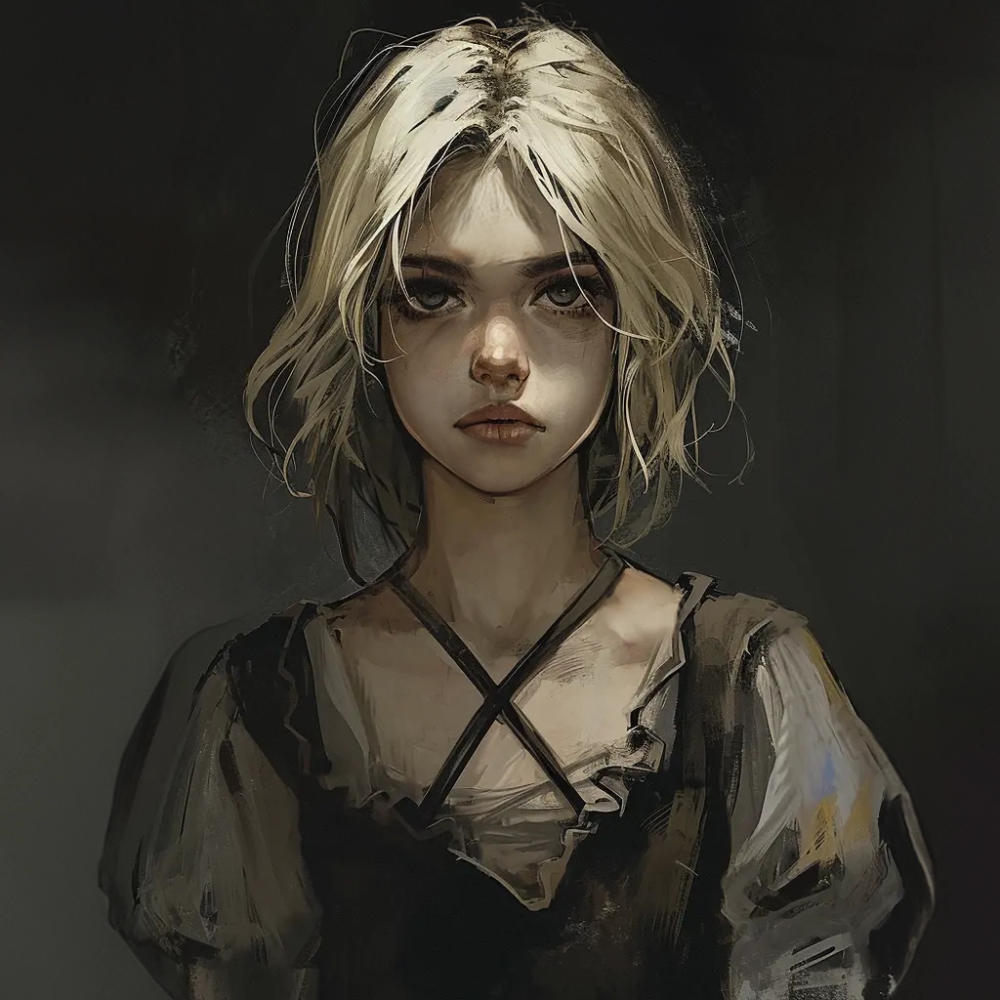

NSCs
Miriam
Waisenkind aus dem St. Andrals Waisenhaus

14 Jahre
KI-Zusammenfassung
Miriam ist ein NSC. Die Notiz ordnet Miriam dem Bereich Vallaki / St. Andrals Waisenhaus / Waisenkinder zu.
Beruf / Rolle
Waisenkind aus dem St. Andrals Waisenhaus.
Wohnort / Aufenthalt
Der Ordnerkontext ordnet die Figur dem Bereich Vallaki / St. Andrals Waisenhaus / Waisenkinder zu.
Beziehungen und Verbindungen
Waisenkind aus dem St. Andrals Waisenhaus.
Historie / Was wir wissen
Waisenkind aus dem St. Andrals Waisenhaus.